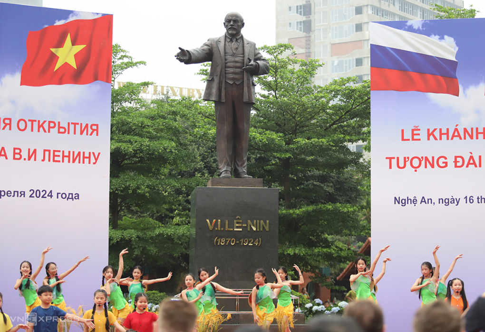
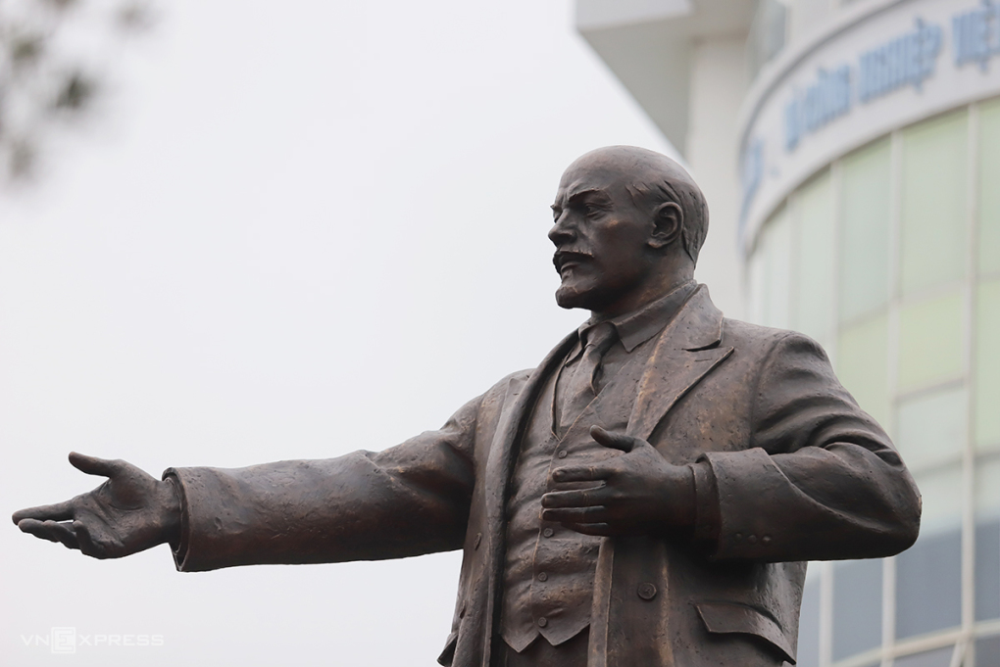

Kiến thức - Kinh nghiệm - Hỏi đáp
Khánh thành tượng Lê Nin tại TP Vinh
NGHỆ ANTượng Lê Nin cao 3,6 m, nặng 4,5 tấn được đặt trong khuôn viên rộng hơn 1.000 m2 tại vòng xuyến ở phường Hưng Dũng, TP Vinh, sáng 16/4. Bức tượng bằng đồng được đặt trên bệ thép cao 3 m tại vòng xuyến giao giữa đại lộ Lê Nin với đường Nguyễn Phong Sắc, phường Hưng Dũng. Mặt trước bệ tượng khắc dòng chữ bằng tiếng Nga và tiếng Việt "V.I.LÊ-NIN, 1870-1924", mặt sau khắc chữ "Biểu tượng của tình hữu nghị Việt - Nga" bằng hai thứ tiếng. Tượng do chính quyền tỉnh Ulyanovsk (quê hương Lê Nin) đúc tặng và vận chuyển từ Nga về TP Vinh vào cuối năm 2023.

Phát biểu tại lễ khánh thành, ông Bùi Đình Long, Phó chủ tịch tỉnh Nghệ An, nói tượng Lê Nin là biểu tượng văn hóa, nghệ thuật, thể hiện sự gắn bó của nhân dân hai tỉnh Nghệ An và Ulyanovsk. Dự án giúp tạo thêm không gian đẹp, là điểm nhấn cho diện mạo đô thị, khu vực trung tâm TP Vinh. Đại sứ Nga tại Việt Nam, ông Gennady Stepanovich Bezdetko cho rằng đây là bằng chứng rõ ràng về sự gần gũi giữa hai quốc gia. Bất chấp những thay đổi quy mô lớn đang diễn ra trên thế giới, Việt - Nga vẫn phát triển trên cơ sở các thỏa thuận hợp tác ở cấp cao nhất, với tinh thần quan hệ đối tác chiến lược toàn diện. "Sự kiện đặt tượng hôm nay sẽ trở thành biểu tượng tiếp theo của tình hữu nghị hợp tác không chỉ giữa tỉnh Ulyanovsk và Nghệ An mà còn giữa nhân dân hai nước nói chung", ông Gennady Stepanovich Bezdetko nói. 
Nghệ An và Ulyanovsk thiết lập quan hệ hữu nghị hợp tác từ những năm 1990, tổ chức nhiều hoạt động hợp tác về văn hóa, giáo dục. Thông qua những hoạt động ngoại giao văn hóa, chính quyền hai tỉnh mong muốn sẽ gắn kết hơn trong hợp tác song phương trên các lĩnh vực đầu tư, thương mại, y tế, giáo dục và đào tạo